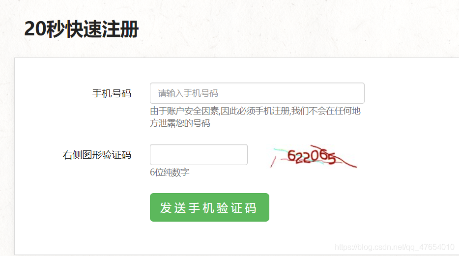
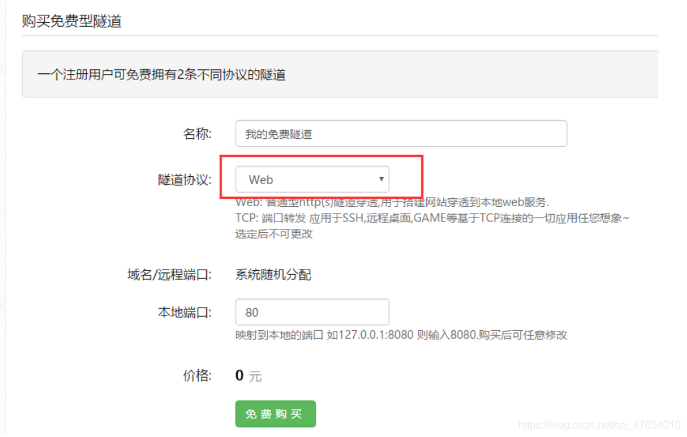
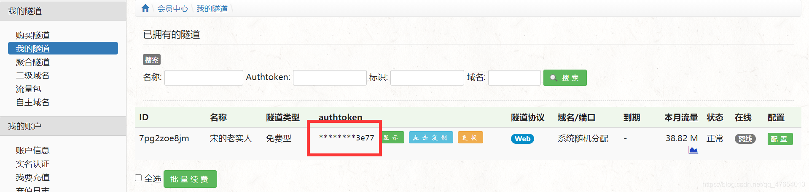
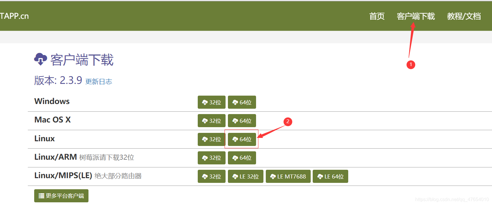
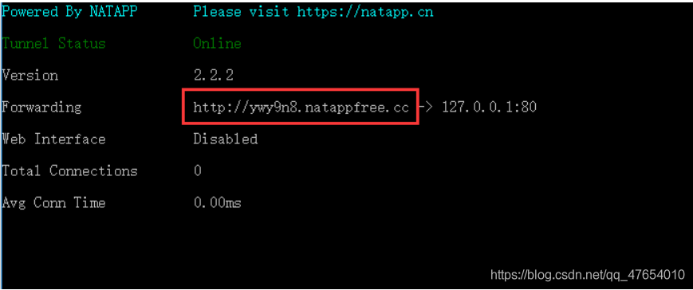

更新：【Windows+Nginx+Natapp零成本搭建web服务器】教程即将上线 。
一、 技术栈
- 虚拟机：当然是选择 Linux 系统，本人使用的是 centos7 版本。
- 服务器：轻量级服务器nginx，10分钟搭建静态网站。
- 内网穿透：使用Natapp，访问内网。
二、步骤
-
Linux系统安装与配置
安装linux虚拟机就跳过吧，网上一大把，当然最好是Centos系统哦。
- 配置
由于是自己创建的虚拟机，需要手动打开80端口，重新配置防火墙，以及切换源。下面开始吧。
a.切换阿里源
1 | 备份：mv /etc/yum.repos.d/CentOS-Base.repo /etc/yum.repos.d/CentOS-Base.repo.backup |
b.防火墙配置
1 | systemctl stop firewalld.service #停止firewall |
c.开启80端口
1 | vim /etc/sysconfig/iptables #编辑防火墙配置文件 |
1
2
3
systemctl restart iptables.service #重启防火墙使配置生效
systemctl enable iptables.service #设置防火墙开机启动
firewall-cmd --query-port=80/tcp #查询端口是否开启
1 | systemctl restart iptables.service #重启防火墙使配置生效 |
2. 配置Nginx服务器
简介：Nginx是一个http服务器。是一个使用c语言开发的高性能的http服务器及反向代理服务器。Nginx是一款高性能的http 服务器/反向代理服务器及电子邮件（IMAP/POP3）代理服务器。由俄罗斯的程序设计师Igor Sysoev所开发，官方测试nginx能够支支撑5万并发链接，并且cpu、内存等资源消耗却非常低，运行非常稳定。
a.安装环境
1 | gcc依赖：yum install gcc-c++ |
b.安装
1 | cd /usr/local |
c.配置网站文件
1 | 准备好自己写的网页，以目录形式上传到 /usr/local/nginx/xxx/ 路径（xxx为网站跟目录名） |
1 | server { |
1 | ./nginx -s reload #重启 |
到这里，就可以实现内网之间的访问了，通过ifconfig查询桥接模式下的内网地址，在本机搜索即可进入网站。但是，做好网站只有自己能看还挺不爽的，接下来就是让别人可以访问的操作辽~
3.Natapp实现内网穿透
简介：内网穿透简单来说就是将内网外网通过natapp隧道打通,让内网的数据让外网可以获取。比如常用的办公室软件等，一般在办公室或家里，通过拨号上网，这样办公软件只有在本地的局域网之内才能访问，那么问题来了，如果是手机上，或者公司外地的办公人员，如何访问到办公软件呢？这就需要natapp内网穿透工具了。运行natapp隧道之后，natapp会分配一个专属域名/端口,办公软件就已经在公网上了,在外地的办公人员可以在任何地方愉快的访问办公软件了~
emmm一句话：别人可以访问你的192.168.xxx.xxx
Natapp网址：点这里
a.购买隧道
注册账号

登录，购买隧道（免费版）
选择web隧道协议

获取authtoken，启动时需要用

b.下载客户端
Linux可直接wget

c.运行Natapp
1 | chmod a+x natapp #给执行权限 |
运行成功结果：

红框内的网址就是你的内网地址了，接下来就可以访问了，可以发给您的小伙伴试试~
更多内容，欢迎访问 宋木头 ~
Tips: Please indicate the source and original author when reprinting or quoting this article.